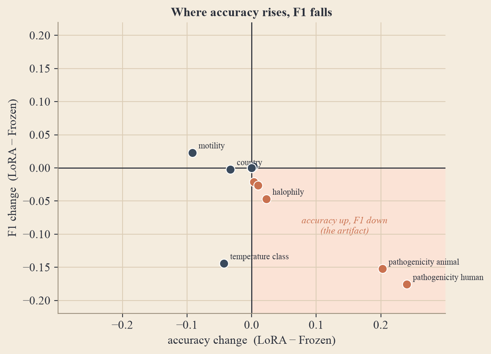
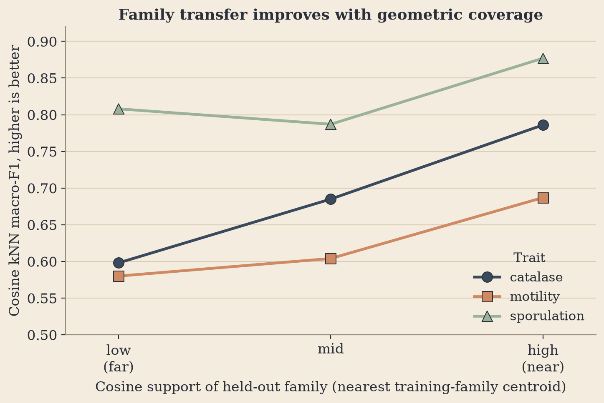

The Taxonomy Ceiling: Why Protein-Language-Model Adaptation Fails to Generalize Across Bacterial Families
Fine-tuning ESM-2 with LoRA does not beat a frozen encoder under family-level shift; the apparent gain is a majority-class accuracy artifact.
Abstract
A bacterial genome is a set of proteins, and recent phenotype predictors aggregate frozen protein language-model embeddings into a genome representation. A natural next lever, once the pooling step is fixed, is to adapt the encoder itself: rather than treat ESM-2 as a frozen feature extractor, fine-tune it to the genomic task. We ask whether this lever survives the regime that matters for uncultured organisms: prediction on held-out taxonomic families. Holding data, splits, pooling (a Set Transformer), task heads, and training recipe fixed, we compare a frozen ESM-2-150M encoder against the same encoder adapted with Low-Rank Adaptation (LoRA), on a family-held-out split of 19,278 bacterial genomes and 21 traits.
On the aggregate primary metric, LoRA appears to win by a small margin (0.580 vs 0.568). We show this gain is a measurement artifact: it is produced entirely by two imbalanced binary pathogenicity heads on which LoRA collapses to majority-class prediction, raising accuracy (0.70 → 0.94; 0.75 → 0.96) while driving F1 to exactly zero. With those two heads removed, encoder adaptation is net negative (−0.011), and on F1 it is neutral-to-harmful across the imbalanced traits. The conclusion mirrors and extends our earlier pooling study: under cross-family shift, neither the pooling operator nor encoder adaptation is the binding constraint. To ask why family prediction collapses, we add a geometry-only diagnostic: cosine k-nearest-neighbor label transfer on the frozen embeddings already reaches AUROC 0.76-0.92, and transfer quality rises monotonically with a held-out family's cosine proximity to labelled training families. This localizes the bottleneck to cross-clade coverage in the frozen space rather than a missing encoder update. We document the artifact as a reusable warning, that accuracy is the wrong primary metric for imbalanced genomic traits, and offer this as a focused, single-seed pilot rather than a finished benchmark.
If pooling is not the constraint, is the encoder?
Foundation models for bacterial genomes increasingly follow a common template: a protein language model such as ESM-2 embeds each open reading frame, and a genome-level model pools the resulting variable-size protein set into one vector for phenotype prediction. In prior work we isolated the pooling step and showed that adaptive (attention / Set-Transformer) pooling helps gene-localized "machinery" traits more than diffuse "compositional" traits, but that the entire advantage collapses under family-level distribution shift. That study deliberately froze the encoder so the result could be read as a pooling effect. It left the obvious follow-up question: if the pooling operator is not the binding constraint under cross-family shift, is the encoder?
The standard hope is that fine-tuning the protein encoder, rather than using it frozen, lets the representation specialize to the genomic task and recover generalization that a fixed encoder cannot. This is the most expensive lever short of retraining a foundation model, and the one most practitioners reach for next. We test it in the cleanest possible way: hold the pooling, heads, loss, data, and split fixed, and change only whether the ESM-2 encoder is frozen or adapted with LoRA (which adds only ~1.8M trainable parameters, keeping the comparison close to a controlled ablation).
A deliberately narrow experiment

Labels are drawn from BacDive, giving 21 prediction heads across seven biological blocks. We use the family-held-out split: no taxonomic family appears in more than one fold, the regime in which our earlier pooling advantage vanished. The genome representation is produced by a Set Transformer pool over the protein embeddings, feeding 21 heads under a masked multi-task loss. In the frozen arm, ESM-2 weights are fixed and only the pool and heads train (5.54M trainable). In the LoRA arm, rank-16 adapters are injected into the encoder and trained jointly with the pool and heads (7.39M trainable). Both arms train for 3 epochs with balanced-family sampling and class-weighted losses, sharded across 8 GPUs.
Contributions
- A controlled frozen-vs-LoRA comparison under family shift. With encoder adaptation as the only experimental variable, on 19,278 genomes / 21 traits at family-held-out evaluation, we find no genuine benefit from fine-tuning ESM-2-150M.
- A concrete metric-artifact diagnosis. The apparent aggregate improvement is an accuracy illusion driven by majority-class collapse on imbalanced binary heads, with F1 going to zero where accuracy goes up. This is a reusable warning for any genomic-trait benchmark that aggregates accuracy across imbalanced labels.
- A second, independent confirmation of the cross-family bottleneck. Combined with our pooling study, this gives two separate architectural levers, set aggregation and encoder adaptation, that both fail to move family-level generalization, sharpening the claim that distribution shift, not architecture, is the open problem.
We are explicit about scope. This is a single-seed pilot with one encoder scale and three training epochs; it is a focused, honest measurement and a methodological warning, not a benchmark sweep or a claim that fine-tuning can never help.
The gain is an accuracy illusion
Read at face value, encoder adaptation gives a +0.011 improvement in the aggregate primary metric (frozen 0.568 → LoRA 0.580). But decomposing by head reveals the entire improvement is carried by two pathogenicity heads, and in a way that signals failure rather than success. On both, the adapted model's accuracy jumps by ~0.20 to 0.24 while its F1 drops to exactly zero. F1 = 0 with high accuracy is the unambiguous signature of majority-class collapse: the model has stopped predicting the rare positive class entirely, scoring well precisely because ~94% of test genomes are negative. In fact, LoRA's accuracy equals the no-skill majority-class baseline to three decimals (0.939 and 0.956).

These two heads contribute +0.021 to the aggregate on their own, more than the entire +0.011 gain. Removing only them flips the sign: across the remaining 19 heads, encoder adaptation is net negative (−0.011).

Measured by F1, where it is informative, adaptation is neutral-to-harmful. The largest movements are losses (temperature class −0.144, pathogenicity human −0.176, animal −0.152); the few gains are small and concentrated in multilabel heads (carbon utilization +0.034, motility +0.023). On the metric that actually tracks positive-class performance, fine-tuning the encoder did not help the imbalanced traits it most needed to improve.

The artifact has a clear signature across heads: the traits where adaptation most raises accuracy are exactly the traits where it most lowers F1. The two pathogenicity heads sit alone in the bottom-right "accuracy-up, F1-down" quadrant, precisely the corner an accuracy-only benchmark rewards and an F1-aware one penalizes.

Why family prediction collapses: a cosine-geometry diagnostic
Neither pooling nor encoder adaptation moves family-level generalization, which raises a more basic question: why does prediction on held-out families collapse in the first place? One hypothesis is representational, that the frozen ESM-2 genome space simply does not place held-out families near the labelled training families it would need as evidence. To test this directly, and independently of any trained head, we run a geometry-only diagnostic on the same family-held-out split. For each trait we standardize the frozen embeddings using training-family statistics, L2-normalize them, and measure two quantities per held-out genome: its cosine similarity to the nearest training-family centroid ("cosine support"), and the label predicted by cosine-weighted k-nearest-neighbor transfer from training genomes. A non-parametric kNN transfer isolates whether the geometry alone already carries the label, with no encoder fine-tuning and no learned classifier.
| Trait | Test n | Nearest-family cos | kNN AUROC | Probe AUROC | ρ(cos, error) |
|---|---|---|---|---|---|
| catalase | 1,442 | 0.845 | 0.764 | 0.817 | −0.107 |
| motility | 1,673 | 0.846 | 0.695 | 0.728 | +0.007 |
| sporulation | 809 | 0.850 | 0.924 | 0.935 | +0.220 |
Two things follow. First, the frozen embedding is not empty of signal: cosine kNN alone reaches AUROC 0.924 on sporulation and 0.76 on catalase without touching the encoder, consistent with the frozen-vs-LoRA null. If adaptation were fixing a missing representation, a pure-geometry transfer this strong should not be possible. Second, transfer quality rises with geometric coverage: binning by cosine support, kNN macro-F1 climbs monotonically from the far to the near tercile for catalase (0.60 → 0.69 → 0.79) and motility (0.58 → 0.60 → 0.69), and catalase shows a negative rank correlation between cosine support and probe error (ρ = −0.107), the signature of a coverage-limited trait.

This reframes the collapse. It is not primarily that the genome representation is wrong or that the encoder is under-trained; it is that many held-out families land in regions of the frozen space that are sparsely covered by labelled training families, so there is no reliable labelled neighbour to transfer from. Where coverage is good, even a trivial cosine kNN transfers labels well; where it is poor, the trait collapses regardless of whether the encoder was adapted. This is a coverage-and-labels problem, not an architecture problem, which is exactly why changing the pooling operator or fine-tuning the encoder does not help.
What it means
Our earlier study showed that swapping the pooling operator (mean vs attention) does not survive family-level shift. This note shows that the far more expensive move, adapting the encoder weights themselves with LoRA, also fails once the accuracy artifact is removed. Two independent architectural levers come up empty in the same regime. The limiting factor in cross-family genomic trait prediction is not how we represent or pool a genome's proteins, but whether any protein-set representation transfers across evolutionary distance. Architecture is not the lever; distribution shift is the problem.
The cosine diagnostic gives a positive explanation for the twin nulls: because a pure-geometry kNN already transfers labels well when a held-out family sits near labelled training families, and degrades when it does not, the frozen representation clearly contains transferable trait signal, what varies is whether the held-out clade has labelled neighbours to borrow from. An architectural lever, whether a smarter pool or an adapted encoder, cannot manufacture evidence for families that are unrepresented in the labelled set. The collapse is coverage-shaped, not architecture-shaped. This predicts the productive next levers are ones that add or propagate labels across clades (broader taxonomic sampling, semi-supervised or retrieval-augmented transfer, and coverage-aware evaluation) rather than further encoder capacity.
The cleanest practical takeaway is methodological: a benchmark that aggregates per-head accuracy will reward a model for collapsing to the majority class on imbalanced labels, exactly the failure mode that matters most for rare, high-stakes traits like pathogenicity. Reporting F1 alongside accuracy on every imbalanced head, and being suspicious of accuracy gains that coincide with F1 collapse, is a cheap and necessary guard.
Limitations
We state the scope plainly. This is a single seed (seed 0) per arm with no error bars; the small aggregate differences are well within plausible seed variance, which is itself part of why the +0.011 "win" should not be trusted. All results use one encoder scale (ESM-2-150M) and a short, three-epoch schedule; whether a larger encoder, a longer schedule, or an unscaled learning rate changes the picture is untested. The LoRA arm inherits √world-size learning-rate scaling and warmup, so disentangling adaptation from the LR/large-batch interaction would need a dedicated ablation. We test LoRA, the parameter-efficient lever, not full-encoder fine-tuning, and we evaluate the family-held-out regime only. A genuinely positive result for encoder adaptation would need to show gains on F1 and across seeds on the imbalanced heads under family holdout, not an accuracy bump that coincides with F1 collapse.
Keywords: encoder fine-tuning · LoRA · protein language models · genomic trait prediction · distribution shift · class imbalance · cosine geometry · k-NN transfer · representational coverage · BacDive · ESM-2 · uncultivated microorganisms
Cite
@article{horiuchi2026taxonomyceiling,
title = {The Taxonomy Ceiling: Why Protein-Language-Model Adaptation Fails to Generalize Across Bacterial Families},
author = {Horiuchi, Miyu},
year = {2026},
note = {replicater.xyz/writing/taxonomy-ceiling}
}